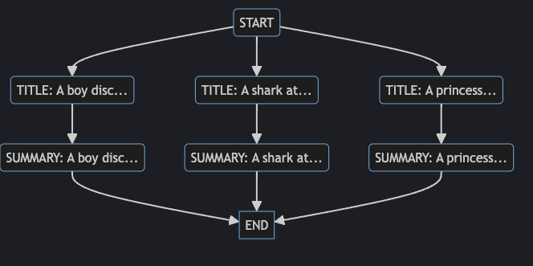

Workflow Displaying the Graph
Overview
Throughout the course you've been creating Workflows by adding and inserting various tasks.
We've been displaying those workflow structures in this documentation by using the extremely helpful Mermaid javascript libray.
graph TB
subgraph " "
direction TB
A("PromptTask: Start"):::main
B("PromptTask: Movie Task 1")
G("PromptTask: Movie Task <i>n</i>" ):::dash
C("ToolkitTask: Summary Task 1"):::tool
H("ToolkitTask: Summary Task <i>n</i>" ):::tool-dash
I("PromptTask: End"):::main
J(["\n Incredible movie insights. \n\n"]):::output
A --> B --> C --> I --> J
A --> G --> H --> I
end
classDef main fill:#4274ff1a, stroke:#426eff
classDef dash stroke-dasharray: 5 5
classDef tool stroke:#f06090
classDef tool-dash stroke:#f06090,stroke-dasharray: 5 5
classDef output fill:#333,stroke:#555
While this is handy to help visualize Workflows while we discuss them, it would certainly be helpful to be able to get a better understanding of Workflows while you create them.
The to_graph method
The Workflow class has a method on it called to_graph. This method outputs the graph you created as a Python dict.
Let's modify our code slightly to print out the dictionary.
Displaying the graph
Import rich rprint
Since we're going to be printing a dict, it would be nice to make it relatively easy to read. We can use the rich library's rprint function to do this.
At the top of your script, add the following import statement:
Comment out workflow.run()
In order to see the graph hierarchy, you don't need to run the workflow. So let's temporarily comment it out in our code. Find the workflow.run() line at the bottom of your script and comment it out.
Use the to_graph method
After the commented out workflow.run() line, add the following lines:
# ...
# workflow.run()
# use the to_graph method to return the graph
graph = workflow.to_graph()
# print the graph
rprint(graph)
Test
Run your code to see the result. It should look something like:
{
'START': set(),
'31d300f8678c41f7ad31ff62cc58d95a': {'START'},
'4072265abb64464f816fd15383c82020': {'31d300f8678c41f7ad31ff62cc58d95a'},
'aea3bb1b14d74298bf32fa91e9ad2815': {'START'},
'8549fa7954014b0eb13099a6a0612517': {'aea3bb1b14d74298bf32fa91e9ad2815'},
'acf4926d80f14a0f84d813ceef1ff3c0': {'START'},
'7224e9aef92e40728828d7e9a2304ef2': {'acf4926d80f14a0f84d813ceef1ff3c0'},
'END': {'7224e9aef92e40728828d7e9a2304ef2', '8549fa7954014b0eb13099a6a0612517', '4072265abb64464f816fd15383c82020'}
}
Now this probably isn't what you were expecting - it's not super clear what the node hierarchy is, and those numbers don't give a lot of context.
Essentially what you're looking at is a list of task ids and their parent task ids.
For example, this line: 'acf4926d80f14a0f84d813ceef1ff3c0': {'START'}, says that the Task with id acf4926d80f14a0f84d813ceef1ff3c0 has a parent of the task with the id START.
Notice the END task has 3 nodes that are it's parent: '7224e9aef92e40728828d7e9a2304ef2', '8549fa7954014b0eb13099a6a0612517', '4072265abb64464f816fd15383c82020'.
Still not making sense? That's okay, let's clean up these task id names and things will become a little clearer.
Clean up the node IDs
The first thing we'll want to do is make sure that each Task has a unique ID that's a litte clearer to understand. This means we'll be adding an id attribute to the movie_task and the summary_task.
Find the section of the code where we create the movie_task. We're going to add an id attribute to it. However, we can't just give it a value of "movie_task" - or each movie PromptTask will have the same id. This is not allowed with Workflows - each task needs to be unique.
We could label the tasks something like "movie_task_1", "movie_task_2", etc.. but it might be nicer to make it a little clearer what each one does.
So what if we used a bit of the description to describe the task? Something like:
TITLE: A princes...TITLE: A shark at...
So we can tell just by glancing at what each task represents.
# ...
# Iterate through the movie descriptions
for description in movie_descriptions:
movie_task = PromptTask(
"What movie title is this? Return only the movie name: {{ description }}",
context={"description": description},
id=f"TITLE: {description[:10]}..", # Use the first 10 characters of the description
)
# ...
Execute that and look at the result:
{
'START': set(),
'TITLE: A princess...': {'START'},
'c9ce1d1f7da54fa299dba9a84ebe7ccb': {'TITLE: A princess...'},
'TITLE: A shark at...': {'START'},
'69c2b414649d42e690a505981ef4979f': {'TITLE: A shark at...'},
'TITLE: A boy disc...': {'START'},
'08ef43cfda28416c91fedf2d3b43cdd5': {'TITLE: A boy disc...'},
'END': {'c9ce1d1f7da54fa299dba9a84ebe7ccb', '69c2b414649d42e690a505981ef4979f', '08ef43cfda28416c91fedf2d3b43cdd5'}
}
Notice how it's a little easier to understand? Let's do the same for the summary_task. Modify that ToolkitTask to have an id as well, and this time use the same description so we can see how the tasks are related:
# ...
# Iterate through the movie descriptions
for description in movie_descriptions:
# ...
summary_task = ToolkitTask(
"Use metacritic to get a summary of this movie: {{ parent_outputs.values() | list |last }}",
tools=[WebScraper(), TaskMemoryClient(off_prompt=False)],
id=f"SUMMARY: {description[:10]}..."
)
# ...
The results are definitely clearer:
{
'START': set(),
'TITLE: A princess...': {'START'},
'SUMMARY: A princess...': {'TITLE: A princess...'},
'TITLE: A shark at...': {'START'},
'SUMMARY: A shark at...': {'TITLE: A shark at...'},
'TITLE: A boy disc...': {'START'},
'SUMMARY: A boy disc...': {'TITLE: A boy disc...'},
'END': {'SUMMARY: A boy disc...', 'SUMMARY: A shark at...', 'SUMMARY: A princess...'}
}
So looking at this, you can see that START is the first item because it has no parents (identified with: set()).
The three TITLE: ... tasks are a parent of START and the SUMMARY tasks are children of their respective TITLE tasks.
The END task has 3 parents - the SUMMARY tasks.
Display with nodes
This is fine for quick cases, but wouldn't it be better if you could actually display the graph in an easier to read way - similar to how we're using mermaid.js in this course?
That's exactly what we're going to do. We'll create a utility we can use on Workflows to display the nodes just like we would with mermaid.
Create a display_graph.py file
Save the following Python file as display_graph.py in the same directory as your app.py.
"""
Mermaid Graph Display Utility
This utility allows for the visualization of Workflow Graphs
using Mermaid.js. It generates an HTML page with a Mermaid graph based on a
given graph data structure and opens it in the default web browser.
Usage:
from display_graph import display_graph
display_graph(your_data)
Requirements:
- Internet connection for Mermaid.js CDN.
- A web browser to view the generated graph.
Author: jason@griptape.ai
Date: Nov 15, 2023
Version: 1.0
"""
import webbrowser
import os
import string
from typing import Dict, Set
# Create unique identifiers for each node in the graph
def generate_identifiers(nodes):
id_generator = iter(string.ascii_uppercase)
return {node: next(id_generator) for node in nodes}
# Convert the graph data to mermaid format
def convert_to_mermaid(data: Dict[str, Set[str]], identifiers: Dict[str, str]) -> str:
mermaid_graph = "graph TD\n"
for child, parents in data.items():
child_id = identifiers[child]
if not parents:
mermaid_graph += f' {child_id}("{child}")\n'
for parent in parents:
parent_id = identifiers[parent]
mermaid_graph += f' {parent_id}("{parent}") --> {child_id}("{child}")\n'
return mermaid_graph
# Create the HTML content for the graph
def html_content(mermaid_graph: str) -> str:
return f"""
<!DOCTYPE html>
<html>
<head>
<title>Mermaid Graph</title>
<script src="https://cdn.jsdelivr.net/npm/mermaid/dist/mermaid.min.js"></script>
<script>mermaid.initialize({{ theme: 'dark', startOnLoad: true }});</script>
<style>
body {{
background-color: rgb(30, 33, 41);
color: rgba(226, 228, 233, 0.82);
}}
</style>
</head>
<body>
<div class="mermaid">
{mermaid_graph}
</div>
</body>
</html>
"""
# Display the graph in a web browser
def display_graph(data: Dict[str, Set[str]]):
identifiers = generate_identifiers(data.keys())
mermaid_graph = convert_to_mermaid(data, identifiers)
file_path = "graph.html"
with open(file_path, "w") as file:
file.write(html_content(mermaid_graph))
webbrowser.open("file://" + os.path.realpath(file_path))
Use display_graph to display your workflow graph
Inside your app.py, you will need to first import the display_graph function.
At the top of your script, add the following import:
Now at the bottom of your script, instead of using rprint to print out your graph, use display_graph
# ...
# workflow.run()
# use the to_graph method to return the graph
graph = workflow.to_graph()
# print the graph
display_graph(graph)
Execute your script and you should see an html page appear with your graph!

Feel free to use this any time you need to quickly display your graph as it's being built.
Finished
Success
Congratulations! You have created a successful Griptape Workflow!
Well done, you've successfully created a Griptape Workflow that allows you to execute complex and interesting dependency graphs.
You have learned how to:
- Create tasks that can handle prompts and tools.
- Learned a bit about Jinja2 templates.
- Create parent/child relationships.
- Create tasks that are depending on multiple incoming tasks.
- Get the output from a workflow for integration with other applications.
- Understand the graph being created by displaying it with various methods.
We hope you enjoyed this course, and look forward to seeing what you're able to create with these new skills.